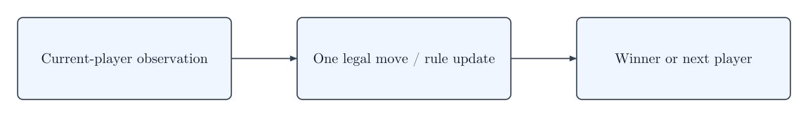
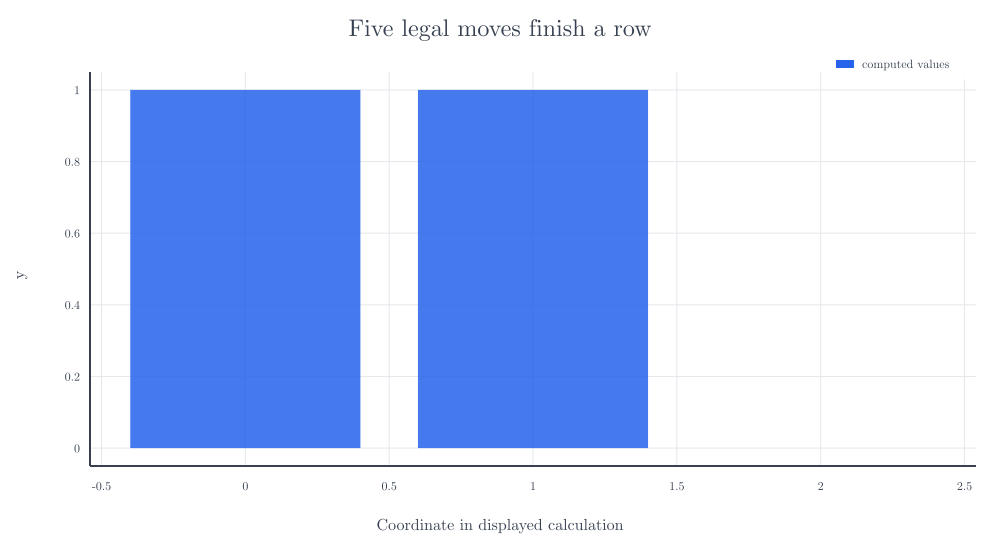
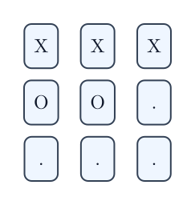

Board Games: Legal Moves, Perspective and Independent Copies
Abstract
Native C++ simulations expose explicit actions, seeded state transitions and owning observations. The complete editable source protocol retains its policy comparisons and checks. There is no hidden learning loop or external simulator process.
Follow one actual transition
#include <dm/dm.hpp>
int main(){std::filesystem::create_directories("build");dm::graphics::Diagram d(28,1150);dm::graphics::DiagramNodeStyle style;style.width=13;style.height=5;style.font_size=24;d.node("input",{-17,0},"Current-player observation",style);d.node("step",{0,0},"One legal move / rule update",style);d.node("result",{17,0},"Winner or next player",style);d.edge("input","step").edge("step","result").save_svg("build/board_games_method.svg");}
Five legal moves finish a row
Moves0,3,1,4,2 give player1 the entire top row in tic-tac-toe. The game is terminal with winner1; there are no legal successors. Clone owns a separate board, rather than a view of mutable cells.
#include <dm/dm.hpp>
int main(){namespace e=dm::rl::environments;std::filesystem::create_directories("build");e::TicTacToe env;env.Reset();for(int move:{0,3,1,4,2})env.Apply(move);std::vector<double>values{double(env.Terminal()),double(env.Winner()),double(env.LegalActions().size())};if(!env.Terminal()||env.Winner()!=1||!env.LegalActions().empty())return 1;std::print("| coordinate | computed value |\n|---:|---:|\n");for(size_t i=0;i<values.size();++i)std::print("| {} | {:.9f} |\n",i,values[i]);dm::nn::save_npz("build/board_games_worked.npz",{{"values",dm::nn::from_vector(values)}});std::vector<double>x(values.size());std::iota(x.begin(),x.end(),0.);const double low=std::min(0.,*std::min_element(values.begin(),values.end())),high=std::max(0.,*std::max_element(values.begin(),values.end())),span=std::max(1e-9,high-low);dm::graphics::RPlot::create().ylim(low-.05*span,high+.05*span).bars(x,values,"computed values",{37,99,235}).title("Five legal moves finish a row").x_label("Coordinate in displayed calculation").size(1000,550).save_svg("build/board_games_worked.svg");}| coordinate | computed value |
|---|---|
| 0 | 1.000000000 |
| 1 | 1.000000000 |
| 2 | 0.000000000 |

Complete source experiment
The source seeds, episode counts, controls and checks are preserved. Every rollout and policy loop is visible here, using canonical C++ environment objects. The final three seeded games are recorded using the native board renderer.
#include <dm/dm.hpp>
// CMD: just run-nn board_games
// Tic-tac-toe, Connect Four and Othello, for self-play.
//
// Port of tflow's board_games. Board games use rl::Game
// (common/rl/board_games.hpp, copied from tflow) rather than rl::Env: two
// players alternate, only legal actions may be applied, and the observation is
// always from the current player's point of view (+1 own, -1 opponent), which
// is what self-play algorithms need. This report records one more seeded
// random game on each board and checks observation perspective and Clone().
// Editable workflow support: checks.hpp
// Small runtime checks used by the executable nn examples. They stay on in
// Release builds and make the example exit nonzero on failure, so `just
// run-all-nn` doubles as a regression test against the recorded TF numbers.
// Editable workflow support: runtime.hpp
// Bounded demonstrations by default; opt into convergence experiments explicitly.
namespace example_runtime {
inline bool Full() {
const char* value = std::getenv("DATAMUNGE_EXAMPLES_FULL");
return value && std::string(value) == "1";
}
template <typename T> T Limit(T requested, T quick_limit) {
return Full() ? requested : std::min(requested, quick_limit);
}
inline void Describe() {
if (!Full())
std::cout << "Quick demonstration: bounded training; convergence metrics require "
"DATAMUNGE_EXAMPLES_FULL=1.\n";
}
} // namespace example_runtime
namespace check {
inline void Require(bool condition, const std::string& message) {
if (!condition) throw std::runtime_error(message);
}
// A short demonstration checks execution, derivatives and persistence; reaching
// a published accuracy/return requires the separately requested full schedule.
inline void TrainingQuality(bool condition, const std::string& message) {
if (example_runtime::Full()) Require(condition, message);
else std::cout << " full-training quality check deferred: " << message << '\n';
}
inline void Near(double actual, double expected, double tolerance, const std::string& message) {
if (!std::isfinite(actual) || !std::isfinite(expected) || std::abs(actual - expected) > tolerance)
throw std::runtime_error(message + ": got " + std::to_string(actual) + ", expected " + std::to_string(expected));
}
/// Expects `f` to throw; returns the message.
template <typename F>
std::string Throws(F&& f, const std::string& message) {
try {
f();
} catch (const std::exception& e) {
return e.what();
}
throw std::runtime_error(message + ": expected an exception");
}
} // namespace check
inline void Header(const std::string& title) {
const std::size_t pad = title.size() < 60 ? 60 - title.size() : 0;
std::cout << "\n== " << title << " " << std::string(pad, '=') << "\n";
}
// Editable workflow support: rl/board_games.hpp
namespace rl {
using datamunge::rl::environments::Game;
using datamunge::rl::environments::GridGame;
using datamunge::rl::environments::TicTacToe;
using datamunge::rl::environments::ConnectFour;
using datamunge::rl::environments::Othello;
}
namespace {
// One game between two uniformly random players; returns the winner.
int RandomGame(rl::Game& game, std::mt19937_64& rng, int* moves) {
game.Reset();
*moves = 0;
while (!game.Terminal()) {
std::vector<int> legal = game.LegalActions();
game.Apply(legal[rng() % legal.size()]);
++*moves;
}
return game.Winner();
}
struct DemoStats {
double p1 = 0, p2 = 0, draw = 0, length = 0;
};
DemoStats Demo(rl::GridGame& game, uint64_t seed) {
std::mt19937_64 rng(seed);
std::cout << "== " << game.name() << ": " << game.num_actions() << " actions, observation of "
<< game.Observation().size() << " cells\n";
int moves = 0;
int winner = RandomGame(game, rng, &moves);
std::cout << " random game, " << moves << " moves, "
<< (winner ? std::string("winner: player ") + std::to_string(winner) : "draw") << "\n";
std::string board = game.Render();
for (size_t pos = 0; pos < board.size(); pos = board.find('\n', pos) + 1) {
size_t end = board.find('\n', pos);
std::cout << " " << board.substr(pos, end - pos) << "\n";
if (end == std::string::npos) break;
}
int wins[3] = {0, 0, 0};
long total_moves = 0;
const int games = 2000;
for (int g = 0; g < games; ++g) {
wins[RandomGame(game, rng, &moves)]++;
total_moves += moves;
}
std::printf(" %d random games: player 1 wins %.1f%%, player 2 wins %.1f%%, draws %.1f%%, "
"mean length %.1f\n",
games, 100.0 * wins[1] / games, 100.0 * wins[2] / games, 100.0 * wins[0] / games,
static_cast<double>(total_moves) / games);
// Record the next seeded game using the same random stream as the benchmark.
game.Reset();
const auto initial = game.Clone();
std::vector<int> actions;
while (!game.Terminal()) {
const auto legal = game.LegalActions();
const int action = legal[rng() % legal.size()];
actions.push_back(action);
game.Apply(action);
}
const auto name = game.name() + "_random_game";
std::filesystem::create_directories("build");
std::filesystem::create_directories("figures");
dm::rl::environments::save_board_replay(dynamic_cast<const rl::GridGame&>(*initial),
actions, "build/" + name + ".mp4");
std::filesystem::copy_file("build/" + name + ".mp4", "figures/" + name + ".mp4",
std::filesystem::copy_options::overwrite_existing);
dm::nn::save_npz("build/" + name + ".npz", {{"actions", dm::nn::from_vector(actions)}});
return {100.0 * wins[1] / games, 100.0 * wins[2] / games, 100.0 * wins[0] / games,
static_cast<double>(total_moves) / games};
}
} // namespace
int main() {
try {
rl::TicTacToe ttt;
const DemoStats t = Demo(ttt, 1);
std::cout << " observation from X's view after X plays centre: ";
ttt.Reset();
ttt.Apply(4);
for (float v : ttt.Observation()) std::printf("%+.0f ", v);
std::cout << " (now O to move, so the centre reads -1)\n\n";
check::Require(ttt.Observation()[4] == -1.f, "after X plays centre, O sees the centre as -1");
// Random tic-tac-toe: X wins about 58.5%, O 28.8%, draws 12.7%.
check::Near(t.p1, 58.5, 4, "tic-tac-toe player 1 win rate");
check::Near(t.draw, 12.7, 3, "tic-tac-toe draw rate");
rl::ConnectFour c4;
const DemoStats c = Demo(c4, 2);
std::cout << "\n";
check::Require(c.p1 > c.p2 && c.length > 7 && c.length < 42, "Connect Four random play: first player favoured");
rl::Othello oth;
const DemoStats o = Demo(oth, 3);
auto [n1, n2] = oth.Counts();
std::printf(" final stone count: X %d, O %d\n", n1, n2);
std::cout << " legal first moves for X: ";
oth.Reset();
const std::vector<int> first = oth.LegalActions();
for (int a : first) std::printf("(%d,%d) ", a / 8, a % 8);
std::cout << "\n";
check::Require(first.size() == 4, "Othello opens with four legal moves");
check::Require(n1 + n2 <= 64 && n1 + n2 > 4 && o.length > 50, "Othello games fill most of the board");
// Clone() lets search algorithms (MCTS, 6.6) try moves without touching
// the real game.
std::unique_ptr<rl::Game> copy = c4.Clone();
c4.Reset();
copy->Reset();
copy->Apply(3);
std::printf("\n Clone(): original has %zu legal moves and is at move 0; the clone has advanced "
"(player %d to move)\n",
c4.LegalActions().size(), copy->CurrentPlayer());
check::Require(c4.LegalActions().size() == 7 && c4.CurrentPlayer() != copy->CurrentPlayer(),
"a move on the clone leaves the original untouched");
std::cout << "\nchecks passed\n";
} catch (const std::exception& e) {
std::cerr << "FAILED: " << e.what() << "\n";
return 1;
}
return 0;
}
== TicTacToe: 9 actions, observation of 9 cells
random game, 9 moves, draw
O X O
O X X
X O X
2000 random games: player 1 wins 59.0%, player 2 wins 29.4%, draws 11.6%, mean length 7.5
observation from X's view after X plays centre: +0 +0 +0 +0 -1 +0 +0 +0 +0 (now O to move, so the centre reads -1)
== ConnectFour: 7 actions, observation of 42 cells
random game, 20 moves, winner: player 2
. . . . . . .
. . . . . O .
. . . . . X O
. X X . . O X
. X X X O O O
X X O O X O O
2000 random games: player 1 wins 54.9%, player 2 wins 45.0%, draws 0.1%, mean length 21.4
== Othello: 65 actions, observation of 64 cells
random game, 61 moves, winner: player 1
X X X X X X O O
O O O O X O X X
O X O X O X X X
O X O X O X X O
X X X O O X O O
X X O X O X O O
X X X O X X O O
X X X X X X O O
2000 random games: player 1 wins 46.5%, player 2 wins 49.2%, draws 4.2%, mean length 60.4
final stone count: X 20, O 44
legal first moves for X: (2,3) (3,2) (4,5) (5,4)
Clone(): original has 7 legal moves and is at move 0; the clone has advanced (player 2 to move)
checks passedInspect the actual board state
The native diagram reads the current object directly. Board games display the five-move worked result; the grid displays its original start, walls and goal.
#include <dm/dm.hpp>
int main(){namespace e=dm::rl::environments;e::TicTacToe env;env.Reset();for(int a:{0,3,1,4,2})env.Apply(a);int rows=env.rows(),cols=env.cols();dm::graphics::Diagram diagram(32,850);dm::graphics::DiagramNodeStyle style;style.width=1.3;style.height=1.3;style.font_size=24;for(int r=0;r<rows;++r)for(int c=0;c<cols;++c){int value=env.At(r,c);std::string text=value==0?".":value==1?"X":"O";diagram.node("cell"+std::to_string(r*cols+c),{double(c)*2.2,double(-r)*2.2},text,style);}diagram.save_svg("build/board_games_board.svg");}
Interpretation
The source checks report reproducibility and the stated control comparisons. Distinguish the displayed fixed-action diagnostics from the original policies, MDP terminality from time-limit truncation, expected reward from sampled return, and a legal game move from an arbitrary action index. All policies and episode loops remain editable here.
Seeded random games
Each replay is the next game from the same random stream after the 2,000-game comparison. The renderer applies the recorded legal actions to a clone of the initial board.